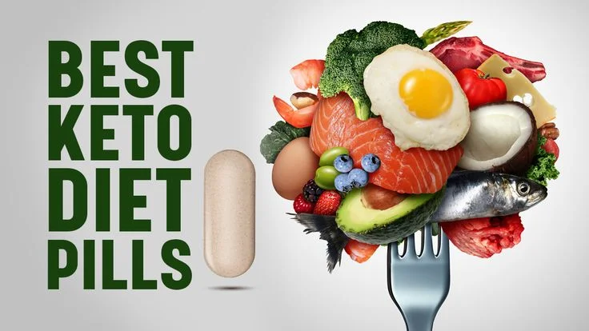

Вопрос лишнего веса давно стал глобальной проблемой. Миллионы людей пробуют десятки диет, строгие ограничения и изнурительные тренировки. Но всё чаще эксперты обращают внимание на более мягкие и натуральные методы поддержки организма. Одним из таких решений стал комплекс Keto.
Keto называют современным помощником в борьбе с лишним весом. Это не строгая диета и не чудо-таблетка, а средство, которое работает за счёт carefully подобранных натуральных компонентов. Всё больше людей делятся своим опытом применения Keto, отмечая, что именно с этим продуктом стало проще контролировать питание и снижать тягу к сладкому.
Что представляет собой Keto?
Keto — это комплекс, созданный для тех, кто хочет снизить вес мягко и без крайностей. Натуральная формула Keto направлена на поддержку обмена веществ, уменьшение чувства голода и снижение тяги к быстрым углеводам.
Многие пользователи отмечают, что с помощью Keto становится проще отказаться от перекусов, появляется лёгкость и больше энергии для повседневной активности.
Важно подчеркнуть, что Keto не является лекарственным препаратом. Это биологически активный комплекс, который помогает организму работать в более комфортном режиме. Именно поэтому Keto выбирают те, кто устал от строгих ограничений и хочет видеть результат постепенно, без строгих ограничений и хочет видеть результат постепенно, без стресса.
Кому чаще всего рекомендуют Keto?
Применение Keto подходит для широкого круга людей:
- - Для тех, кто ведёт сидячий образ жизни и хочет снизить вес без изнурительных тренировок.
- - Для тех, кто уже пробовал диеты, но не получил стабильного результата.
- - Для людей, которым сложно полностью отказаться от любимых продуктов.
- - Для всех, кто хочет мягко поддержать организм и чувствовать больше энергии в течение дня.
Благодаря своей универсальности Keto всё чаще используют как дополнительный инструмент в процессе снижения веса. Именно поэтому популярность Keto растёт как среди женщин, так и среди мужчин.
Отзывы о Keto: первые впечатления
Согласно опросам, большинство людей, которые попробовали Keto, отмечают несколько ключевых изменений:
- - Становится проще контролировать питание.
- - Снижается тяга к сладкому и фастфуду.
- - Появляется больше энергии для повседневных дел.
- - Возникает чувство лёгкости и комфорта.
Например, одна из пользовательниц делится: « Я долго искала продукт, который не требует строгих ограничений. С Keto мне стало легче придерживаться правильного питания, и я почувствовала больше энергии » .
Подобные истории всё чаще появляются в блогах и социальных сетях, где люди рассказывают о своём опыте с Keto. И чем больше таких отзывов, тем сильнее растёт интерес к продукту.
Что думают специалисты о Keto?
Специалисты в области питания отмечают, что Keto нельзя рассматривать как волшебное средство, но при этом подчеркивают его преимущества.
Цитата нутрициолога:
«Keto работает мягко и постепенно. Его можно рассматривать как поддержку организма, особенно для людей, которым сложно соблюдать строгие диеты. Натуральный состав и удобный формат делают Keto интересным решением для многих. Я считаю, что Keto может быть хорошим инструментом в комплексе с правильным питанием и активностью».
Такой комментарий показывает, что Keto воспринимается не как чудо-средство, а как практичный и безопасный помощник.
Вопросы о Keto
Нужно ли сидеть на диете при приёме Keto?
Нет, Keto работает даже без строгих ограничений. Но сочетание с правильным питанием усилит результат.
Сколько времени нужно принимать Keto, чтобы увидеть эффект?
У разных людей по-разному, но многие отмечают первые изменения уже через 2–3 недели.
Можно ли сочетать Keto со спортом?
Да, спорт и активность только улучшат общее самочувствие вместе с Keto.
Безопасен ли Keto?
Keto создан на основе натуральных компонентов и имеет мягкое воздействие.
Почему выбирают именно Keto?
- - Диета → стресс, постоянные ограничения, возврат веса после окончания.
- - Тренировки → требуют времени и сил, не всегда подходят для занятых людей.
- - Keto → мягкая поддержка организма, снижение тяги к еде, больше энергии без лишних усилий.
Именно поэтому всё больше людей отдают предпочтение Keto как более комфортному решению для снижения веса.
Сегодня Keto официально представлен и доступен для заказа онлайн. Узнайте подробнее о составе, условиях и преимуществах на официальном сайте.
Перейти на официальный сайт Keto »